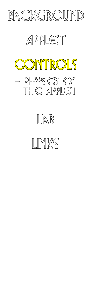

|  |
Applet Controls Explained
To Rotate along the x and y axes:
click and drag inside the viewport.To Zoom (or Rotate about the z-axis):
hold the Shift key and drag inside the viewport.
You can change:
- Peri: the distance of closes approach [in kiloparsecs].
- Red Galaxy mass: the mass of the Red (companion) galaxy [in terms of the Green (main) galaxy's mass, ie 1=equal mass].
- Galaxy theta, Galaxy phi: the inclination and slew of the primary galaxy in the orbital plane [in degrees].
- Companion theta, Companion phi: the inclination and slew of the companion galaxy in the orbital plane [in degrees].
- Number of Stars: the total number of stars in the simulation, divided evenly between galaxies. The smaller the number, the faster this applet will run; the bigger the number, the cooler the simulation. That's life...